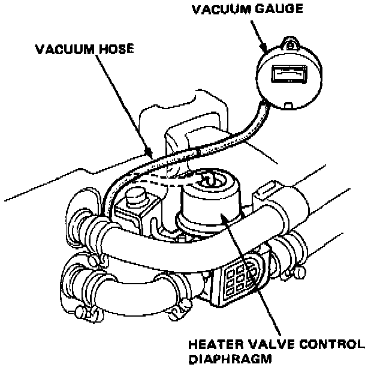

Vacuum Controller: Testing and Inspection

Vacuum Control Valve Test
NOTE: Check that the vacuum hoses are properly routed and the heat control cable is adjusted, then test as follows.
1. Start the engine and let it idle.
2. Disconnect the vacuum hose from the heater valve control diaphragm and connect a vacuum gauge to the hose.
3. Turn the air temperature dial right and left and check for vacuum. There should be vacuum with the temperature lever in max cool, and there should be no vacuum with the lever turned to hot.
- If there is no vacuum with the temperature lever in max cool, inspect the vacuum hose for pinching, disconnection, bending, or breakage. Replace the control valve and re-test.
- There still is vacuum with the temperature lever turned to hot, replace the control valve and retest.